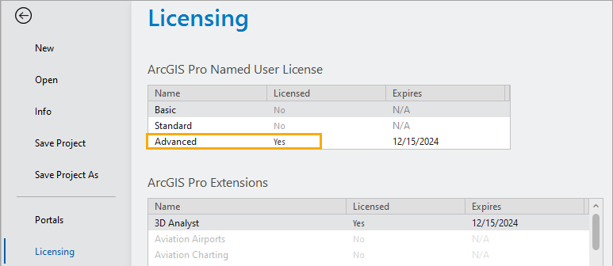

ArcGIS Pro license types
ArcGIS Pro offers the following license types:
- Named User—The default license type.
- Single Use—Available through license conversion only if the ArcGIS Pro license is included with an ArcGIS Desktop deployment.
- Concurrent Use—Available through license conversion only if the ArcGIS Pro license is included with an ArcGIS Desktop deployment.
Named User license
With the Named User license type, an ArcGIS Online or ArcGIS Enterprise organization administrator gives a member access to ArcGIS Pro by setting the member's user type to one of the following:
- Creator—This user type provides access to ArcGIS Pro Basic.
- Professional—This user type provides access to ArcGIS Pro Standard.
- Professional Plus—This user type provides access to ArcGIS Pro Advanced.
Extensions can be assigned to any one of these user types as add-on licenses.
The Professional Plus user type includes several ArcGIS Pro extensions. These cannot be reassigned to other user types.
An organization member with an ArcGIS Pro license uses their ArcGIS Online or ArcGIS Enterprise account credentials to sign in to ArcGIS Pro. The member can sign in to the application on any machine on which it is installed (up to three machines at the same time).
The application runs with the license level (Advanced, Standard, or Basic) associated with the member's user type. The license type, license level, and available extensions can be seen on the Licensing tab of the ArcGIS Pro settings page .
 |
Single Use license
A Single Use license authorizes one person to use ArcGIS Pro. That person can use the software on one computer at a time, while having it installed on a maximum of two computers.
A Single Use license can be transferred to a different computer deauthorizing the license on the currently authorized machine and repeating the authorization process on the new machine.
It is not necessary to sign in to use ArcGIS Pro with a Single Use license.
Concurrent Use license
A Concurrent Use license allows multiple users to share access to ArcGIS Pro from any computer on a network or a virtual machine. ArcGIS License Manager software, installed on a network computer, manages the distribution of a pool of shared licenses. The number of Concurrent Use licenses in the pool determines how many people can use the software at the same time. When a user starts ArcGIS Pro with a Concurrent Use license, the software sends a request to the license manager to determine if a license is available. The user can choose any available license level and extensions. At this point, the software is enabled and the number of available licenses decreases by one. When the user stops using the software, the license is returned to the pool.
A Concurrent Use license can also be borrowed from the license manager so that the software can be used for a specified time while a user is disconnected from the network. When a license is borrowed, the number of available licenses in the pool decreases by one. The user can return the license to the pool by reconnecting to the network. (The license is returned automatically at the end of the specified borrowing time.)
It is not necessary to sign in to use ArcGIS Pro with a Concurrent Use license.
Offline license use
Named User licenses and Concurrent Use licenses can be authorized for offline use if this is allowed by your ArcGIS organization administrator or system administrator. When a license is taken offline, ArcGIS Pro is available on the computer used to check out the license. The computer does not need to connect to ArcGIS Online (for a Named User license) or to the licensing server (for a Concurrent Use license) to run the software.